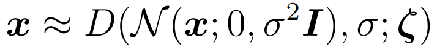
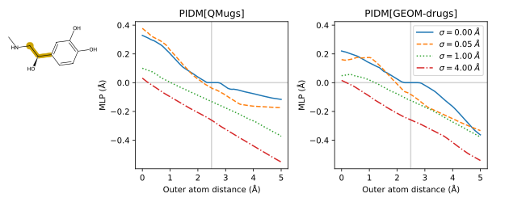
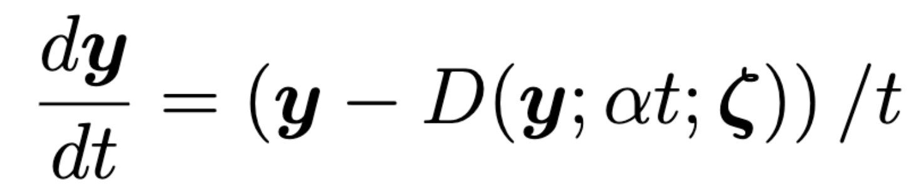

Model
Diffusion models can be generalized around the concept of denoising. Our model represents a denoising function D that yields an estimate of the actual coordinates x of the atoms of a molecule when provided with coordinates that have been perturbed by a centered, uncorrelated Gaussian of width σ:
where ζ represents the composition of the molecule (atom types, connectivity, and chirality).
The architecture is build around two major components: a graph transformer [1] network to build a suitable atom embedding and a series of bonded subcomponents whose outputs are summed together for coordinate prediction.
Training data
Two separate models were trained, each based on one of the following synthetic datasets. Both consist of drug-like compounds optimized in vacuum using the semiempirical GFN2-xTB [2] method.
| Name | Link | Number molecules | Reference |
|---|---|---|---|
| QMugs | https://libdrive.ethz.ch/index.php/s/X5vOBNSITAG5vzM | 665,911 | [3] |
| GEOM-drugs | https://dataverse.harvard.edu/api/access/datafile/4327252 | 301,821 | [4] |
The two models enjoy similar performance. The examples on this page were generated using the QMugs model.
Probing
Among the benefits of employing a physics-informed model is a physically relevant representation, which aids learning and helps with generalization. More importantly, it allows the model to be probed and explained. For example, by inspecting the output of the "bond" component of our model for a given molecule, we can extract predicted lengths for all associated molecular bonds.
The following is example taken from a bend in adrenaline, showing the size of the correction to atom position (MLP) versus the outer atom distance of the noised input. As σ approaches zero, the model predicts that no correction is needed as long as the correct atom distance is presented (grey vertical line, as predicted directly from GFN2-xTB). Note that the two models exhibit similar behavior.
Generation
We adopt a score-based, probability flow framework in order to generate conformers from our trained model [5]. As is typical in this approach, we parameterize noising as a multidimensional Wiener process applied to molecule coordinates x over a time interval t ∈ [0,1]. For generation, we reverse this process by starting from random atom coordinates y sampled from a Gaussian distribution at t=1 and then numerically solve for the solution at t=0 by applying the probability flow ODE:
where α is a scale parameter in units of Å.
Inspired by work elsewhere [5], we solve the probability flow ODE using Heun's 2nd-order method, augmented by a form of backtracking. Both stochastic and deterministic options are available, the latter outperforming the former on most benchmarks. Generation can be performed using any desired number of steps. Reasonably consistent results may be obtained with 100 steps. The examples presented here use determinstic generation and 500 steps.
Sample output
The following examples were selected randomly and without preconditions or filtering from the test subset taken from QMugs. Shown in the grey column is the first conformer found in QMugs. The remaining four columns are unfiltered, generated results. All renderings are oriented along principal components.

References
- Brody, Shaked, Uri Alon, and Eran Yahav. “How Attentive Are Graph Attention Networks?” arXiv:2105.14491 [Cs], January 31, 2022. http://arxiv.org/abs/2105.14491.
- Grimme, Stefan, Christoph Bannwarth, and Philip Shushkov. “A Robust and Accurate Tight-Binding Quantum Chemical Method for Structures, Vibrational Frequencies, and Noncovalent Interactions of Large Molecular Systems Parametrized for All Spd-Block Elements (Z = 1–86).” Journal of Chemical Theory and Computation 13, no. 5 (May 9, 2017): 1989–2009. https://doi.org/10.1021/acs.jctc.7b00118.
- Isert, Clemens, Kenneth Atz, José Jiménez-Luna, and Gisbert Schneider. “QMugs, Quantum Mechanical Properties of Drug-like Molecules.” Scientific Data 9, no. 1 (June 7, 2022): 273. https://doi.org/10.1038/s41597-022-01390-7.
- Axelrod, Simon, and Rafael Gómez-Bombarelli. “GEOM, Energy-Annotated Molecular Conformations for Property Prediction and Molecular Generation.” Scientific Data 9, no. 1 (April 21, 2022): 185. https://doi.org/10.1038/s41597-022-01288-4.
- Karras, Tero, Miika Aittala, Timo Aila, and Samuli Laine. “Elucidating the Design Space of Diffusion-Based Generative Models,” 2022. https://openreview.net/forum?id=k7FuTOWMOc7.